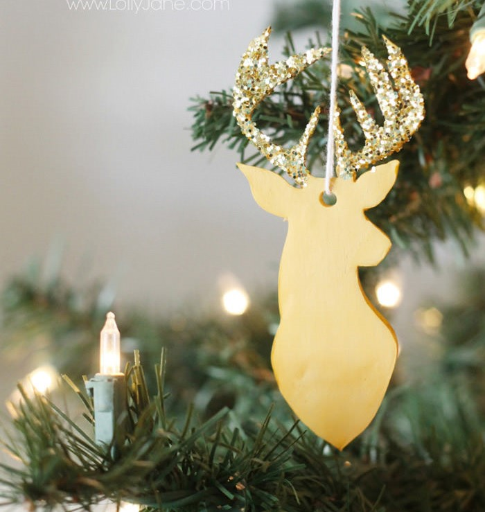

Joulukuusenkoriste
Kuvittele kaunis käsintehty joulukuusenkoriste, joka loistaa joulukuusessa kuin pieni tähti. Tämä yksilö on täydellinen lisäys kodikkaaseen joulukoristeluusi.
A buttonTervetuloa lumoavaan maailmaan, jossa luovuus ja joulu kohtaavat! Joulun askartelut tarjoavat ainutlaatuisen mahdollisuuden ilmaista mielikuvitustasi ja luoda kauniita käsitöitä joulun taianomaiseen tunnelmaan. Riippumatta siitä, oletko askartelun konkari vai vasta aloitteleva taiteilija, tämä perinne tarjoaa loputtomasti iloa ja inspiraatiota.
Joulun askartelut eivät ole vain tapa koristaa kotia juhlavalla tavalla, vaan ne ovat myös henkilökohtaisia eleitä, joilla voimme ilmaista rakkauttamme ja välittämistämme läheisillemme. Kukin itse tehty koriste tai lahja kantaa mukanaan ainutlaatuista tunnelmaa ja huolellisuutta, joka tekee joulusta entistäkin erityisemmän.
Tässä lumoavassa maailmassa voit sukeltaa syvälle askartelun iloon: Luovuuden Vapaapudotus: Anna mielikuvituksesi lentää vapaasti ja luo omia joulukoristeita erilaisista materiaaleista. Paperista, pahvista, kierrätysmateriaaleista tai luonnon antimista – vaihtoehtoja on rajattomasti. Lahjat Rakkaudella: Askartele persoonalliset joululahjat, jotka kertovat tarinan välittämisestäsi. Itsetehdyt joulukortit, korut, kynttilät tai herkulliset kotitekoiset herkkupaketit voivat olla lämmittäviä lahjoja, jotka jäävät mieleen pitkäksi aikaa. Kodin Lumoavat Yksityiskohdat: Luo joulun taikaa kotiisi itse tehdyillä koristeilla. Joulukranssit, ikkunatähdet, ja lyhdyt antavat kodillesi juhlavan tunnelman, joka valaisee pimeimmänkin talvi-illan. Yhdessäoloa Perheen Parissa: Joulun askarteluhetket voivat olla myös mainio tapa viettää aikaa yhdessä perheen ja ystävien kanssa. Kun jaatte luovuutenne, syntyy muistoja, jotka säilyvät sydämissänne.
Tule mukaan luomaan lumoavia hetkiä ja tuomaan jouluinen tunnelma kotiisi itse tehdyillä koristeilla ja lahjoilla. Joulun askartelut ovat enemmän kuin pelkkiä käsitöitä – ne ovat tapa jakaa rakkautta ja luoda unohtumattomia hetkiä, jotka kantavat mukanaan joulun taikaa.
Kuvittele kaunis käsintehty joulukuusenkoriste, joka loistaa joulukuusessa kuin pieni tähti. Tämä yksilö on täydellinen lisäys kodikkaaseen joulukoristeluusi.
A buttonLumisten metsien salaisuus, joulutonttu on iloinen ja viehättävä hahmo, joka tuo iloa ja taikaa jouluaikaan. DIY-joulutonttu antaa persoonallisen kosketuksen perinteisiin.
A buttonKäsin askarrellut joulukortit välittävät lämpimiä terveisiä ja tuovat hymyn vastaanottajan kasvoille. Jokainen kortti on ainutlaatuinen taideteos, joka kertoo tarinaa rakkaudesta ja välittämisestä.
A buttonSuklaata rakastavien herkkusuitten unelma! Tämä DIY-joulukranssi ei ainoastaan koristele oveasi tai seinääsi, vaan tarjoaa myös herkullisia yllätyksiä sulavassa suklaamuodossa.
A buttonKuvittele kaunis joululyhty, joka on valmistettu jäistä ja hehkuu lumoavaa valoa. Tämä DIY-joulukoriste sulattaa sydämesi ja luo lumoavan ilmapiirin talven pimeyteen.
A button